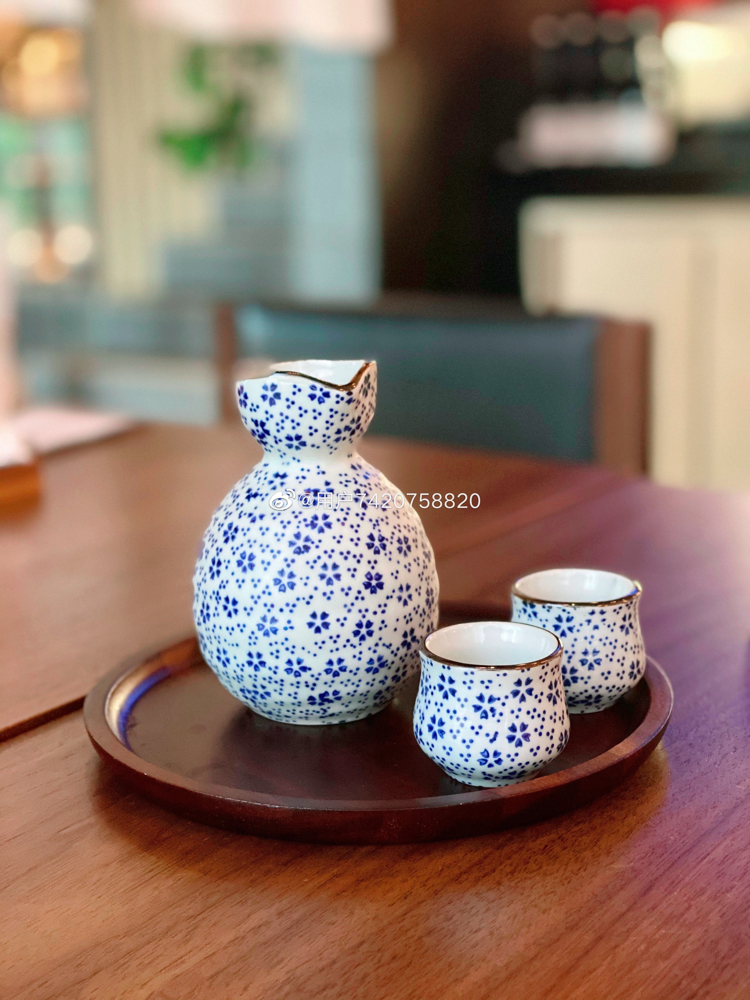
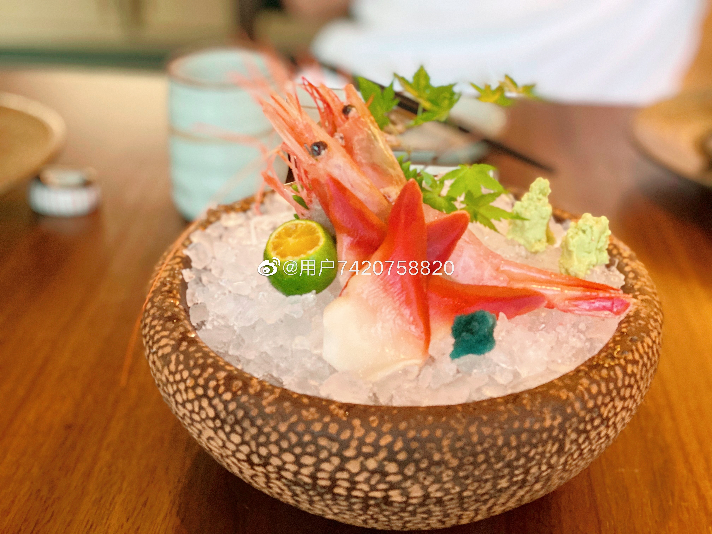
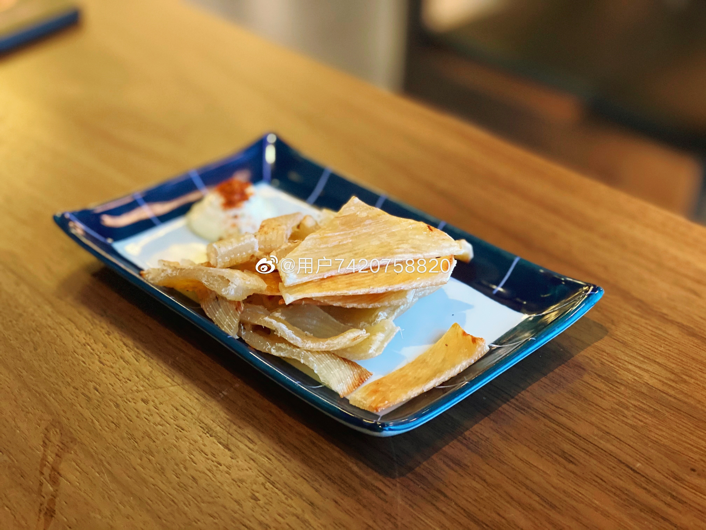
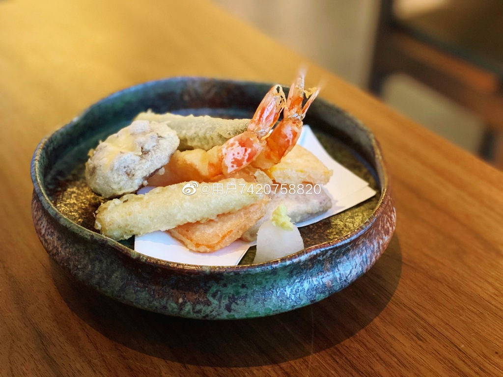
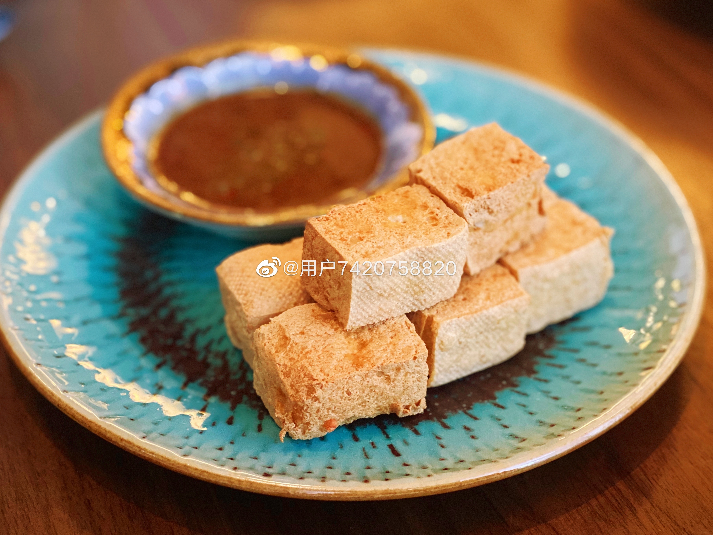
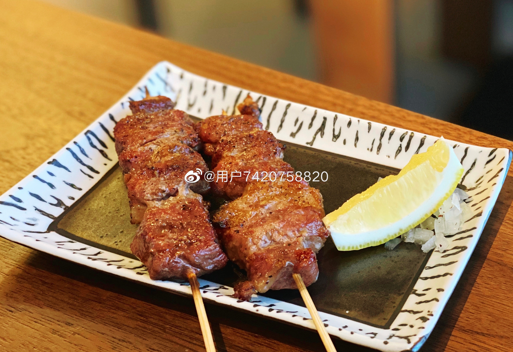
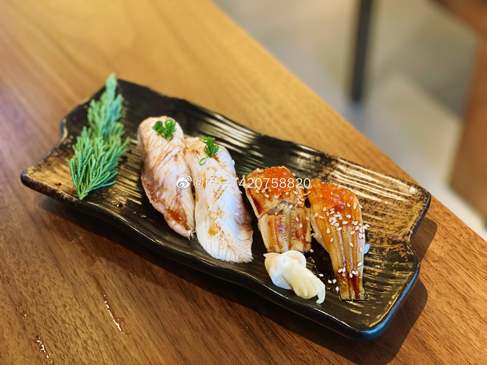
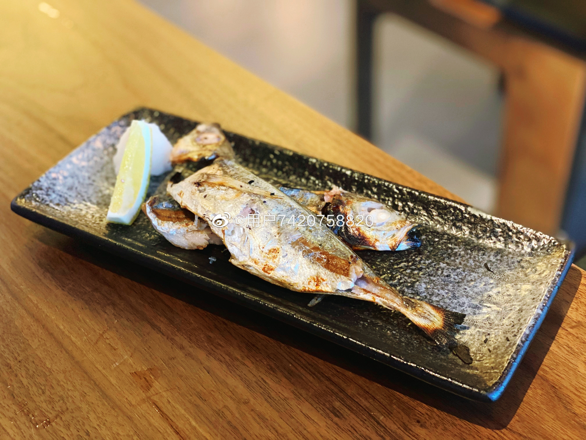
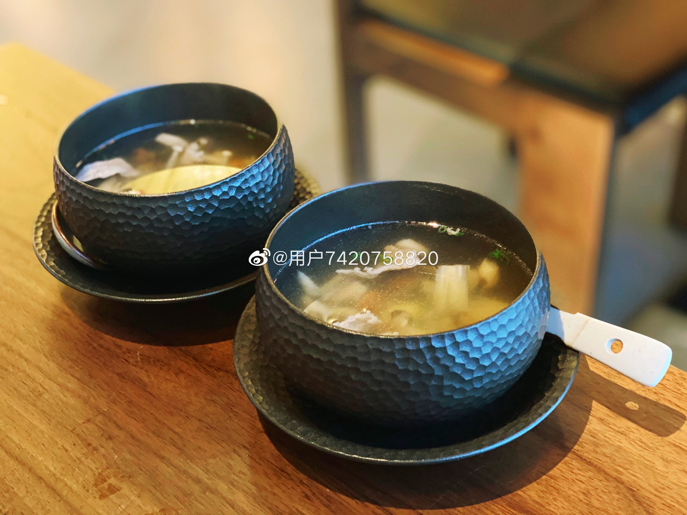

宁波鸢尾爱丽丝
@宁波·鸢尾爱丽丝·融焱·粹
这是一家由几个档口拼在一起的店。
从左至右分别是法餐，铁板烧，日料。
位于鄞州公园二期对面江山万里的沿街商铺。
今天品尝的是日料，二楼是日料套餐，一楼可以散点和团购。
买了双人晚市288团购，很划算了！还配了一壶清酒。服务也非常好。
整体的口味是偏淡少油低脂的，很适合不喜欢浓重口味的人来尝试！
烤物除了鸡肉一般，别的都好吃！
天妇罗一点都不油腻，外脆里嫩！
清酒一般般
牛肉菌菇汤非常鲜，而且可以吃出来没有味精的勾兑。
炸豆腐很脆，但是酱汁没有辣味，对我来说还是缺了点什么
刺生特别新鲜，甜虾软甜软甜的，差点想加单
寿司的米用的不合适，一夹就散，但上面的食材新鲜。
整体来说，是一家超高性价比的店，两个人288吃日料吃到撑！
只放了一部分图片～
口味清淡的人推荐！








